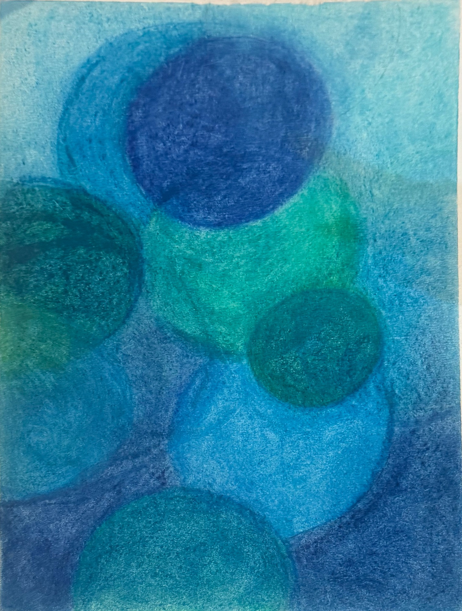

← All works

Anisa Quraishi
Tidal Moons
Blue and green circles drift across one another, with a dark blue disc near the top.
- Artist
- Anisa Quraishi
- Medium
- Pastel on paper
- Dimensions
- 16 × 10 in / 40.64 × 25.4 cm (H × W)
- Year
- 2019
- Reference
- AQ-0023
Prices, availability and delivery details will be confirmed before a purchase.